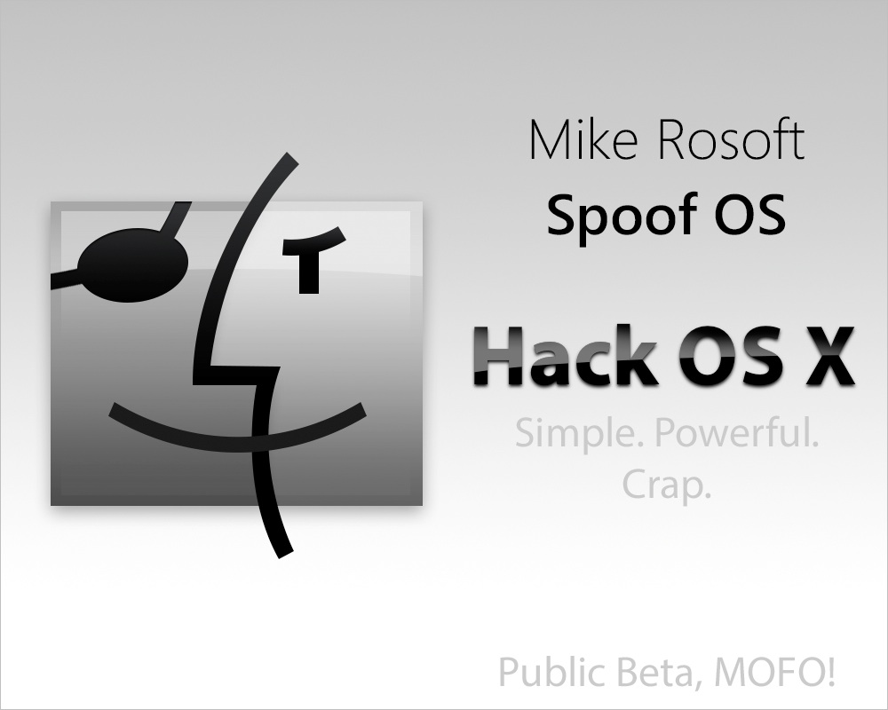

See what people are saying:
"Spoof OS sucks, A LOT!"
-Robin Banks, Lawlstreet Journal
"By far, this is the most unstable and crappy OS in the world! Awesome!"
-Homeless Guy We Paid to Say This
"Only a company like Spoof OS Inc. could make something so horrible."
-Steve Mobs, CEO of Mapple Inc.
"I... LOVE... THIS... COMPANY!"
-Mike Rosoft, CEO of Spoof OS Inc.
"I use this system everyday to get my procrastination done."
-Alpha Kenny Buddy, former Spoof OS Inc. Employee